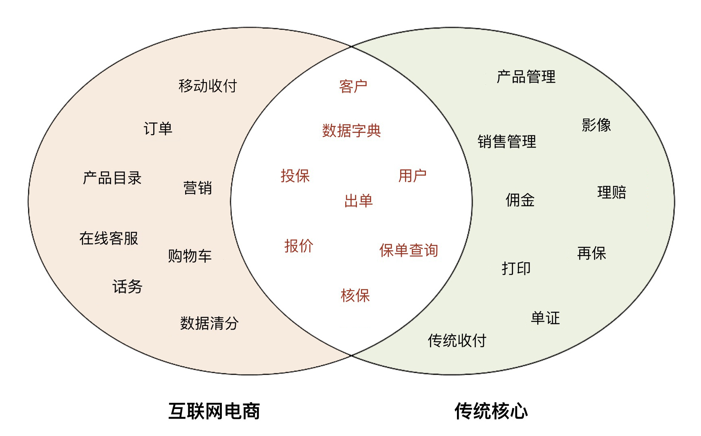
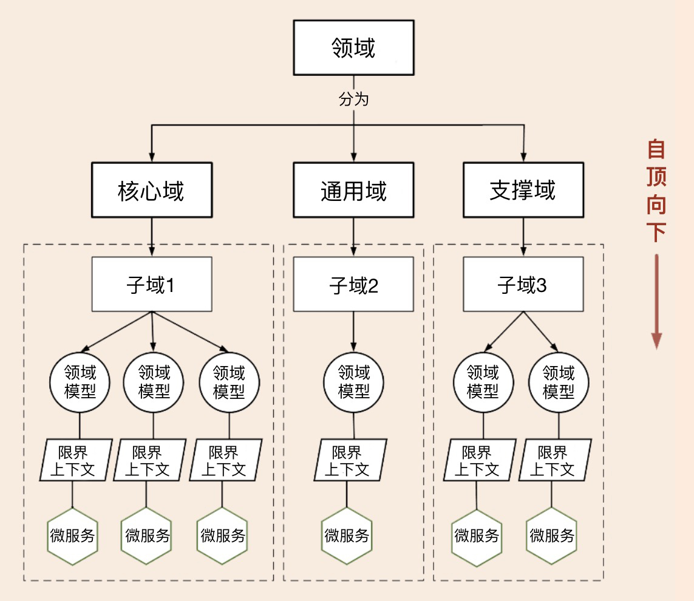
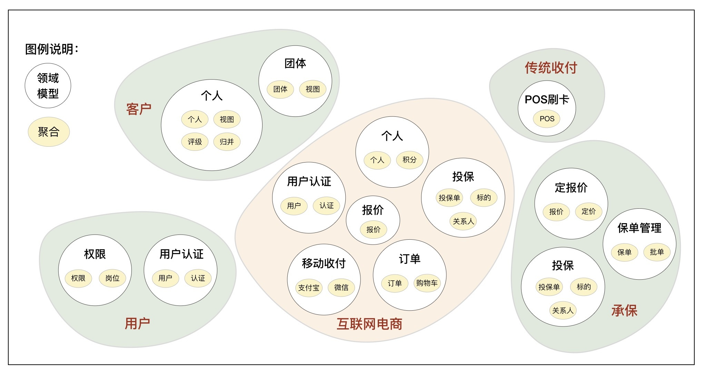
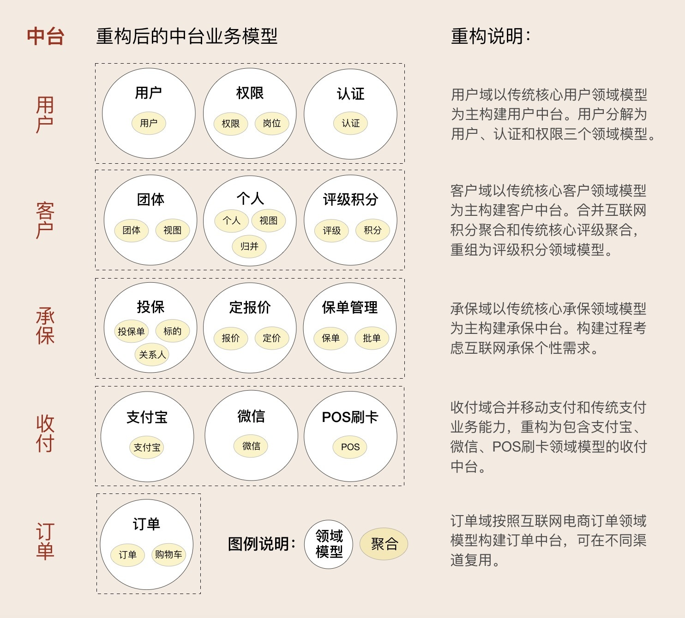
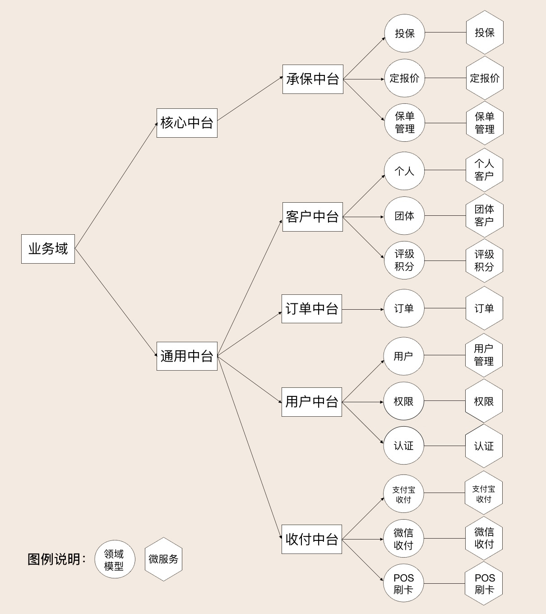
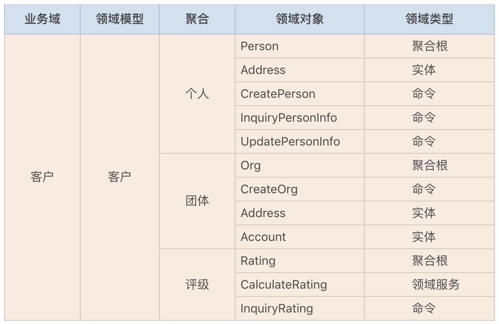
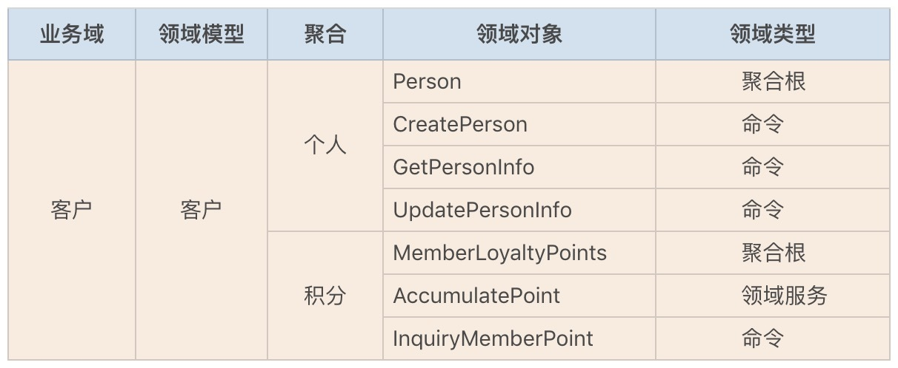
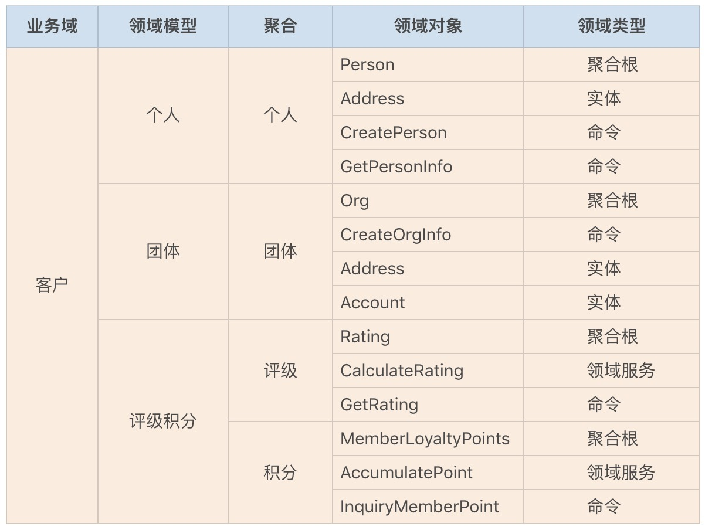

- 00 开篇词 学好了DDD，你能做什么？.md.html
- 01 领域驱动设计：微服务设计为什么要选择DDD.md.html
- 02 领域、子域、核心域、通用域和支撑域：傻傻分不清？.md.html
- 03 限界上下文：定义领域边界的利器
- 04 实体和值对象：从领域模型的基础单元看系统设计.md.html
- 05 聚合和聚合根：怎样设计聚合？.md.html
- 06 领域事件：解耦微服务的关键.md.html
- 07 DDD分层架构：有效降低层与层之间的依赖.md.html
- 08 微服务架构模型：几种常见模型的对比和分析.md.html
- 09 中台：数字转型后到底应该共享什么？.md.html
- 10 DDD、中台和微服务：它们是如何协作的？.md.html
- 11 DDD实践：如何用DDD重构中台业务模型？.md.html
- 12 领域建模：如何用事件风暴构建领域模型？.md.html
- 13 代码模型（上）：如何使用DDD设计微服务代码模型？.md.html
- 14 代码模型（下）：如何保证领域模型与代码模型的一致性？.md.html
- 15 边界：微服务的各种边界在架构演进中的作用？.md.html
- 16 视图：如何实现服务和数据在微服务各层的协作？.md.html
- 17 从后端到前端：微服务后，前端如何设计？.md.html
- 18 知识点串讲：基于DDD的微服务设计实例.md.html
- 19 总结（一）：微服务设计和拆分要坚持哪些原则？.md.html
- 20 总结（二）：分布式架构关键设计10问.md.html
- 答疑：有关3个典型问题的讲解.md.html
- 结束语 所谓高手，就是跨过坑和大海.md.html
11 DDD实践：如何用DDD重构中台业务模型？
你好，我是欧创新。
进入两千年后，随着互联网应用的快速发展，很多传统企业开始触网，建设自己的互联网电商平台。后来又随着微信和 App 等移动互联应用的兴起，又形成了新一轮的移动应用热潮。这些移动互联应用大多面向个人或者第三方，市场和需求变化快，需要以更敏捷的速度适应市场变化，为了保持快速响应能力和频繁发版的要求，很多时候这些移动互联网应用是独立于传统核心系统建设的，但两者承载的业务大部分又都是同质的，因此很容易出现业务能力重叠的问题。
阿里巴巴过去带动了传统企业向互联网电商转型。而如今又到了一个新的历史时期，在阿里巴巴提出中台战略后，很多企业又紧跟它的步伐，高举中台大旗，轰轰烈烈地开始了数字化转型之路。
那么传统企业在中台转型时，该如何从错综复杂的业务中构建中台业务模型呢？今天我就用一个传统企业中台建模的案例，带你一起用 DDD 的设计思想来构建中台业务模型。
传统企业应用分析
互联网电商平台和传统核心应用，两者面向的渠道和客户不一样，但销售的产品却很相似，它们之间的业务模型既有相同的地方，又有不同的地方。
现在我拿保险行业的互联网电商和传统核心应用来做个对比分析。我们看一下下面这张图，这两者在业务功能上会有很多相似和差异，这种相似和差异主要体现在四个方面。

**1. 核心能力的重复建设。**由于销售同质保险产品，二者在核心业务流程和功能上必然相似，因此在核心业务能力上存在功能重叠是不可避免的。传统保险核心应用有报价、投保、核保和出单功能，同样在互联网电商平台也有。这就是核心能力的重复建设。
**2. 通用能力的重复建设。**传统核心应用的通用平台大而全，通常会比较重。而互联网电商平台离不开这些通用能力的支撑，但为了保持敏捷性，一般会自己建设缩小版的通用功能，比如用户、客户等。这是通用能力的重复建设。
**3. 业务职能的分离建设。**有一类业务功能，在互联网电商平台中建设了一部分，在传统核心应用中也建设了一部分，二者功能不重叠而且还互补，组合在一起是一个完整的业务职能。比如缴费功能，互联网电商平台主要面向个人客户，于是采用了支付宝和微信支付的方式。而传统核心应用主要是柜台操作，仍在采用移动 POS 机的缴费方式。二者都是缴费，为了保证业务模型的完整性，在构建中台业务模型时，我们可以考虑将这两部分模型重组为一个完整的业务模型。
**4. 互联网电商平台和传统核心功能前后完全独立建设。**传统核心应用主要面向柜台，不需要互联网电商平台的在线客户、话务、订单和购物车等功能。而互联网电商平台主要面向个人客户，它不需要后端比较重的再保、佣金、打印等功能。在构建中台业务模型时，对这种情况应区别对待，将面向后端业务管理的应用沉淀到后台，将前端能力构建为面向互联网渠道的通用中台，比如订单等。
如何避免重复造轮子？
要避免重复建设，就要理解中台的理念和思想。前面说了“中台是企业级能力复用平台”，“复用”用白话说就是重复使用，就是要避免重复造轮子的事情。
中台的设计思想与“高内聚、低耦合”的设计原则是高度一致的。高内聚是把相关的业务行为聚集在一起，把不相关的行为放在其它地方，如果你要修改某个业务行为，只需要修改一处。对了！中台就是要这样做，按照“高内聚、松耦合”的原则，实现企业级的能力复用！
那如果你的企业遇到了重复造轮子的情况，应该怎么处理？
你需要站在企业高度，将重复的需要共享的通用能力、核心能力沉淀到中台，将分离的业务能力重组为完整的业务板块，构建可复用的中台业务模型。前端个性能力归前端，后端管理能力归后台。建立前、中、后台边界清晰，融合协作的企业级可复用的业务模型。
如何构建中台业务模型？
我们可以用 DDD 领域建模的方法来构建中台业务模型。你可以选择两种建模策略：自顶向下和自底向上的策略。具体采用哪种策略，你需要结合公司的具体情况来分析，下面我就来介绍一下这两种策略。
1. 自顶向下的策略
第一种策略是自顶向下。这种策略是先做顶层设计，从最高领域逐级分解为中台，分别建立领域模型，根据业务属性分为通用中台或核心中台。领域建模过程主要基于业务现状，暂时不考虑系统现状。自顶向下的策略适用于全新的应用系统建设，或旧系统推倒重建的情况。
由于这种策略不必受限于现有系统，你可以用 DDD 领域逐级分解的领域建模方法。从下面这张图我们可以看出它的主要步骤：第一步是将领域分解为子域，子域可以分为核心域、通用域和支撑域；第二步是对子域建模，划分领域边界，建立领域模型和限界上下文；第三步则是根据限界上下文进行微服务设计。

2. 自底向上的策略
第二种策略是自底向上。这种策略是基于业务和系统现状完成领域建模。首先分别完成系统所在业务域的领域建模；然后对齐业务域，找出具有同类或相似业务功能的领域模型，对比分析领域模型的差异，重组领域对象，重构领域模型。这个过程会沉淀公共和复用的业务能力，会将分散的业务模型整合。自底向上策略适用于遗留系统业务模型的演进式重构。
下面我以互联网电商和传统核心应用的几个典型业务域为例，带你了解具体如何采用自底向上的策略来构建中台业务模型，主要分为这样三个步骤。
第一步：锁定系统所在业务域，构建领域模型。
锁定系统所在的业务域，采用事件风暴，找出领域对象，构建聚合，划分限界上下文，建立领域模型。看一下下面这张图，我们选取了传统核心应用的用户、客户、传统收付和承保四个业务域以及互联网电商业务域，共计五个业务域来完成领域建模。

从上面这张图中，我们可以看到传统核心共构建了八个领域模型。其中用户域构建了用户认证和权限两个领域模型，客户域构建了个人和团体两个领域模型，传统收付构建了 POS 刷卡领域模型，承保域构建了定报价、投保和保单管理三个领域模型。
互联网电商构建了报价、投保、订单、客户、用户认证和移动收付六个领域模型。
在这些领域模型的清单里，我们可以看到二者之间有很多名称相似的领域模型。深入分析后你会发现，这些名称相似的领域模型存在业务能力重复，或者业务职能分散（比如移动支付和传统支付）的问题。那在构建中台业务模型时，你就需要重点关注它们，将这些不同领域模型中重复的业务能力沉淀到中台业务模型中，将分散的领域模型整合到统一的中台业务模型中，对外提供统一的共享的中台服务。
第二步：对齐业务域，构建中台业务模型。
在下面这张图里，你可以看到右侧的传统核心领域模型明显多于左侧的互联网电商，那我们是不是就可以得出一个初步的结论：传统核心面向企业内大部分应用，大而全，领域模型相对完备，而互联网电商面向单一渠道，领域模型相对单一。
这个结论也给我们指明了一个方向：首先我们可以将传统核心的领域模型作为主领域模型，将互联网电商领域模型作为辅助模型来构建中台业务模型。然后再将互联网电商中重复的能力沉淀到传统核心的领域模型中，只保留自己的个性能力，比如订单。中台业务建模时，既要关注领域模型的完备性，也要关注不同渠道敏捷响应市场的要求。

有了上述这样一个思路，我们就可以开始构建中台业务模型了。
我们从互联网电商和传统核心的领域模型中，归纳并分离出能覆盖两个域的所有业务子域。通过分析，我们找到了用户、客户、承保、收付和订单五个业务域，它们是可以用于领域模型对比分析的基准域。
下面我以客户为例，来给你讲一下客户中台业务模型的构建过程。
互联网电商客户主要面向个人客户，除了有个人客户信息管理功能外，基于营销目的它还有客户积分功能，因此它的领域模型有个人和积分两个聚合。
而传统核心客户除了支持个人客户外，还有单位和组织机构等团体客户，它有个人和团体两个领域模型。其中个人领域模型中除了个人客户信息管理功能外，还有个人客户的评级、重复客户的归并和客户的统一视图等功能，因此它的领域模型有个人、视图、评级和归并四个聚合。
构建多业务域的中台业务模型的过程，就是找出同一业务域内所有同类业务的领域模型，对比分析域内领域模型和聚合的差异和共同点，打破原有的模型，完成新的中台业务模型重组或归并的过程。
我们将互联网电商和传统核心的领域模型分解后，我们找到了五个与个人客户领域相关的聚合，包括：个人、积分、评级、归并和视图。这五个聚合原来分别分散在互联网电商和传统核心的领域模型中，我们需要打破原有的领域模型，进行功能沉淀和聚合的重组，重新找出这些聚合的限界上下文，重构领域模型。
**最终个人客户的领域模型重构为：**个人、归并和视图三个聚合重构为个人领域模型（客户信息管理），评级和积分两个聚合重构为评级积分领域模型（面向个人客户）。到这里我们就完成了个人客户领域模型的构建了。
好像还漏掉点什么东西呢？对了，还有团队客户领域模型！其实团体客户很简单。由于它只在传统核心中出现，我们将它在传统核心中的领域模型直接拿过来用就行了。
至此我们就完成了客户中台业务模型的构建了，客户中台构建了个人、团体和评级积分三个领域模型。
通过客户中台业务模型的构建，你是否 get 到构建中台业务模型的要点了呢？总结成一句话就是：“分域建模型，找准基准域，划定上下文，聚合重归类。”
其它业务域其实也是一样的过程，在这里我就不一一讲述了，你可以自己练习一下，作为课后作业。完成后你可以对照下面这张图看一下，这就是其它业务域重构后的中台业务模型。

第三步：中台归类，根据领域模型设计微服务。
完成中台业务建模后，我们就有了下面这张图。从这张图中我们可以看到总共构建了多少个中台，中台下面有哪些领域模型，哪些中台是通用中台，哪些中台是核心中台，中台的基本信息等等，都一目了然。你根据中台下的领域模型就可以设计微服务了。

重构过程中的领域对象
上面主要是从聚合的角度来描述中台业务模型的重组，是相对高阶的业务模块的重构。业务模型重构和聚合重组，往往会带来领域对象和业务行为的变化。下面我带你了解一下，在领域模型重组过程中，发生在更底层的领域对象的活动。
我们还是以客户为例来讲述。由于对象过多，我只选取了部分领域对象和业务行为。
传统核心客户领域模型重构之前，包含个人、团体和评级三个聚合，每个聚合内部都有自己的聚合根、实体、方法和领域服务等。

互联网电商客户领域模型重构前包含个人和积分两个聚合，每个聚合包含了自己的领域对象、方法和领域服务等。

传统核心和互联网电商客户领域模型重构成客户中台后，建立了个人、团体和评级积分三个领域模型。其中个人领域模型有个人聚合，团体领域模型有团体聚合，评级积分领域模型有评级和积分两个聚合。这些领域模型的领域对象来自原来的领域模型，但积分评级是重组后的领域模型，它们原来的聚合会带着各自的领域对象，加入到新的领域模型中。
这里还要注意：部分领域对象可能会根据新的业务要求，从原来的聚合中分离，重组到其它聚合。新领域模型的领域对象，比如实体、领域服务等，在重组后可能还会根据新的业务场景和需求进行代码重构。

总结
今天我们一起讨论了传统企业中台数字化转型，在面对多个不同渠道应用重复建设时，如何用 DDD 领域建模的思想来构建中台业务模型。中台业务建模有自顶向下和自底向上两种策略，这两种策略有自己的适用场景，你需要结合自己公司的情况选择合适的策略。
其实呢，中台业务模型的重构过程，也是微服务架构演进的过程。业务边界即微服务边界，业务边界做好了，微服务的边界自然就会很好。